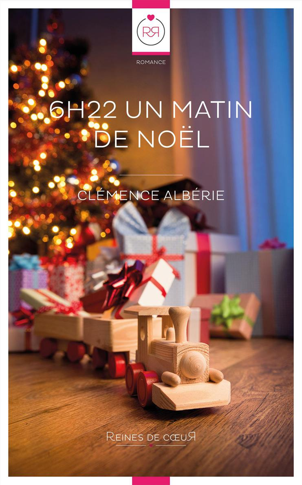

6h22 Un matin de Noël
Clémence Albérie
À mes amis de toujours, parce que dans la vie on est tous des amis, Claire, Marie, Mélissa, Yoann, Stéphanie, Sébastien, je vous aime.
Jour 1973 : 8h30
Cela faisait maintenant quatre ans qu’Andréa et Gaëlle étaient mariées. Il semblait loin le temps où Gaëlle, la jeune vendeuse blonde qui vivait dans une vie pleine d’amertume, avait découvert Andréa, la brune pianiste, au fil de leurs trajets en train pour aller et venir au travail. Elles en avaient fait du chemin depuis leur première rencontre.
Debout dans la salle de bain, Gaëlle songeait à l’intensité avec laquelle leur histoire était née. Les disputes du début pour une simple place dans un train, les premières confidences, la découverte de l’homosexualité d’Andréa, de son mariage avec une femme infidèle, de l’amour inconditionnel qu’elle avait pour le fils qu’elles avaient eu ensemble. La blonde s’était surprise à se livrer tout autant à la brune. Elle lui avait parlé de sa relation désastreuse avec son mari, qui s’était terminée lorsqu’il avait déclenché sa fausse couche en la poussant dans les escaliers. Quand Gaëlle songeait à l’amertume et à l’aigreur dans laquelle elle vivait à l’époque, elle savourait encore plus le bonheur qu’était sa vie depuis qu’elle était tombée amoureuse d’Andréa.
Elles étaient mariées depuis quatre ans, et cela en faisait maintenant deux qu’elles essayaient d’avoir un enfant. La procédure avait été longue et fastidieuse. Elles en avaient parlé à leur famille et à leur fils Nicolas qui était ravi à l’idée de devenir grand frère à l’âge de huit ans. Puis elles s’étaient attaquées aux longues étapes de l’insémination artificielle par donneur. Elles avaient pris rendez-vous en Belgique, s’étaient soumises aux entretiens psychologiques, aux examens médicaux.
Gaëlle était stressée par cette démarche, angoissée à l’idée de porter à nouveau un enfant, régulièrement perturbée par la peur de ne pas mener sa grossesse à terme une fois de plus. Mais la présence d’Andréa calmait toutes ses craintes. La brune était sereine et patiente. Elle ne se lassait jamais de la rassurer, de l’accompagner dans ces démarches qu’elle connaissait déjà par cœur. Elle la soutenait durant les traitements de stimulation ovarienne, et faisait preuve d’une patience olympienne.
Un an après leur premier rendez-vous, elles avaient enfin pu faire la première insémination. Elles avaient choisi le même donneur qu’Andréa avait utilisé pour son premier bébé avec sa première femme, afin de créer un lien entre leurs deux enfants. La première tentative avait échoué et il avait fallu quelques semaines à Gaëlle pour digérer cet échec. Sa compagne lui répétait que ce n’était pas grave, que c’était très fréquent et qu’il fallait la plupart du temps plusieurs inséminations avant que cela ne fonctionne. Mais la blonde ne pouvait s’empêcher de se sentir fautive.
Encouragée par l’optimisme de sa femme et de son fils adoptif, elle avait finalement retrouvé confiance et s’était autorisée une nouvelle tentative. Voilà comment elle était arrivée là, debout devant son lavabo, à attendre fébrilement qu’un plus ou un moins apparaisse. Andréa était assise sur le rebord de la baignoire et se mordillait nerveusement l’ongle du pouce, les yeux dans le vague. Gaëlle tenta de suivre son regard, et s’aperçut qu’elle était plongée dans une contemplation minutieuse des serviettes de bain.
— Tu stresses ma chérie ? questionna la blonde pour détourner ses propres pensées du test de grossesse.
Andréa sursauta violemment au son de sa voix et se leva d’un bond.
— Quoi, quoi ? interrogea la brune en se précipitant vers l’évier.
— Rien Andréa, calme-toi, la rassura Gaëlle en la prenant par la taille. Je te demandais juste si tu stressais, mais j’ai ma réponse.
— Excuse-moi, soupira-t-elle en essayant de se détendre dans ses bras. Je crois que je le suis, en effet.
— Moi aussi, avoua la blonde en venant l’embrasser tendrement.
Après quelques minutes enlacées, les deux jeunes femmes furent rappelées à la réalité par la sonnerie du minuteur. Elles se regardèrent, trouvant du courage dans les yeux de l’autre, et finirent par se séparer. Gaëlle s’empara du test et prit une profonde inspiration avant de finalement y jeter un œil. Elle sentit son cœur se serrer en voyant le moins s’afficher. Incapable de parler, les larmes aux yeux et la gorge nouée, elle le montra à sa femme qui se décomposa à son tour. Andréa laissa échapper un sanglot avant de tenter de se ressaisir. Elle prit Gaëlle dans ses bras et la força à la regarder.
— Ce n’est pas grave ma chérie, nous allons… Nous allons y arriver. Nous essaierons à nouveau, nous irons vers la FIV s’il le faut, dit-elle d’une voix chevrotante qui trahissait sa tristesse.
La blonde acquiesça par automatisme, mais les mots de sa partenaire semblaient n’avoir aucun sens à ses oreilles. Elle l’embrassa et se sépara d’elle.
— J’ai besoin de prendre une douche, annonça-t-elle en se précipitant hors de cette salle de bain pour rejoindre celle de la chambre d’ami.
Elle s’enferma et se déshabilla instantanément pour entrer dans la douche. Elle alluma l’eau bouillante et se plaça sous le jet puissant. Dès que l’eau entra en contact avec son visage, elle se mit à pleurer sans plus se retenir. Elle se laissa glisser le long de la paroi froide recouverte de carrelage et prit son visage entre ses mains. Elle s’était recroquevillée et l’eau éclaboussait sa nuque. Elle se sentit doucement lâcher toute la tension qu’elle avait accumulée ces derniers jours. Elle avait la sensation qu’un poids tombait de ses épaules pour laisser la place à un nouveau. Le stress du test de grossesse disparaissait maintenant qu’elle se trouvait assaillie par la tristesse de l’échec. Elle ne savait pas depuis combien de temps elle était là et sursauta en entendant des coups légers à la porte.
— Chérie… entendit-elle à travers.
La voix de sa femme était discrète, étouffée par le bois entre elles. Elle semblait triste et inquiète et les sanglots de la blonde redoublèrent.
— Gaëlle s’il-te-plait, ouvre-moi.
Elle hésita un instant, mais la peine dans la voix de sa femme lui était insupportable. Elle se leva, sans prêter la moindre attention à l’eau qu’elle semait partout, et vint attraper la poignée.
— Ne te ferme pas à moi… murmura faiblement la brune.
Gaëlle ouvrit alors et se décala pour laisser sa compagne entrer. Elle regardait le sol, toujours nue, incapable d’affronter son regard. Andréa la prit dans ses bras et la serra fort contre elle. À son grand soulagement, la blonde s’agrippa à elle et accepta cette étreinte rassurante.
— J’ai vécu ça aussi mon cœur, je sais ce que tu ressens, je sais combien tu as mal… chuchota-t-elle dans son oreille. Je connais cette souffrance, je la vis moi aussi en ce moment. Si nous voulons traverser tout ça, il ne faut pas nous fermer l’une à l’autre. À deux c’est quatre pieds pour nous empêcher de tomber, quatre mains pour nous battre.
Gaëlle la serra de toutes ses forces et se laissa emporter par son odeur familière et apaisante. Elle se sépara d’Andréa à contrecœur, poussée par un frissonnement qui lui rappela qu’elle était toujours nue.
— Tu es toute mouillée, dit la blonde en regardant les vêtements de sa compagne.
— C’est de t’avoir eue dans mes bras, répondit Andréa naturellement.
Les deux jeunes femmes se regardèrent, réalisant le double sens de leur discussion, et se mirent à rire légèrement.
— C’est bon de t’entendre rire, avoua la brune en venant l’embrasser.
— J’ai mal au cœur.
— Moi aussi. Laissons-nous un peu de temps.
Jour 2001 : 11h35
Après l’échec de la seconde insémination artificielle, Gaëlle et Andréa avaient décidé de laisser passer les fêtes de fin d’année avant de réfléchir à ce qu’elles voulaient pour l’avenir. À six jours de Noël cependant, la blonde se rendit chez le médecin pour discuter avec lui de douleurs qui l’inquiétaient. Elle avait mal au ventre, des nausées régulières. Les deux compagnes avaient d’abord pensé qu’elle somatisait la grossesse qu’elle avait tant voulue, et se déclenchait peut-être inconsciemment les symptômes. Cette situation devenait insupportable pour l’une comme pour l’autre, incapables d’avancer face à de tels signaux leur rappelant l’enfant qu’elles n’allaient pas avoir. Gaëlle était donc là, dans la salle d’attente de son médecin, à patienter pour que son tour vienne. Elle était nerveuse, en colère, agacée et triste à la fois. Elle avait convaincu Andréa de ne pas annuler ses cours de piano pour l’accompagner, et commençait à sérieusement regretter son geste. Perdue dans ses pensées, elle sursauta quand le généraliste prononça son nom.
— Madame Brumési.
— Présente ! s’exclama-t-elle en se levant d’un bond.
— Nous ne sommes pas à l’école, dit-il en souriant, et c’est à vous d’ailleurs.
Elle sourit avec gêne et se dépêcha de fuir les regards amusés des autres patients.
— Qu’est-ce qui vous amène ici ? questionna-t-il en venant prendre place derrière son grand bureau laqué noir.
— Vous devez savoir que j’ai… Je n’ai pas…
— Je suis au courant, votre femme m’en a parlé, la coupa-t-il pour lui éviter la peine de se répéter là-dessus.
— Depuis… Ce jour… J’ai de nombreux symptômes et… ça devient très pénible à vivre.
— Quels symptômes ?
— Comme si j’étais enceinte, mais sans être enceinte, expliqua Gaëlle en grimaçant.
— Pouvez-vous être plus précise ? Quelles manifestations de la grossesse ? Quelles fréquences ? demanda le médecin en notant sur son calepin.
— Eh bien… Pour commencer il y a les nausées… J’en ai tous les matins à sept heures quinze environ et souvent le soir vers dix-neuf heures.
— Autre chose ?
— J’ai du retard dans mes règles.
— Combien de retard ? continua le professionnel de santé.
— Deux semaines, répondit Gaëlle immédiatement. Et j’ai aussi beaucoup de mal à dormir.
— C’est tout ?
— C’est déjà pas mal embêtant, s’agaça la blonde sur la défensive.
— C’est tout au sens, y a-t-il un autre symptôme madame Brumési ? s’amusa le médecin, patient.
— Oh… Hum… Oui, avoua-t-elle un peu honteuse de s’être si facilement emportée. Désolée.
— Ce n’est pas grave. Allez, venez, nous allons examiner tout ça plus en détail, annonça-t-il en se levant et en tendant la main vers sa table d’auscultation.
Gaëlle s’exécuta, habituée, et ôta son t-shirt et son pantalon pour se retrouver en sous-vêtements.
— Qu’est-ce que vous pensez que ça puisse être docteur ? s’enquit-elle en s’allongeant.
— Beaucoup de choses… Un problème digestif, un tour que vous joue votre inconscient. Quand avez-vous fait le test de grossesse ?
— Quinze jours après l’insémination.
— Avez-vous fait plusieurs tests ?
— Non, à quoi bon ? Un négatif c’est déjà largement suffisant !
Le médecin ne dit rien de plus et commença à ausculter sa patiente. Il prit sa tension, écouta son cœur, ses poumons, son ventre. Puis il palpa son abdomen à différents endroits, cherchant les zones douloureuses.
— Vos seins vous font-ils mal ?
— Par moment oui, soupira Gaëlle avec tristesse. Mon corps est un salaud sadique.
— Écoutez madame Brumési, je sais que vous allez me dire que ça ne sert à rien, mais… Je souhaiterais que vous fassiez un nouveau test de grossesse.
— Mais le premier est revenu négatif ! s’exclama la blonde en se redressant.
— Je sais, mais les faux négatifs ça existe. Ça fait six semaines depuis l’insémination, ça serait beaucoup plus fiable.
Gaëlle sembla hésiter un instant et poussa un soupir trahissant sa nervosité.
— Je ne pense pas que ce soit une bonne idée, finit-elle par avouer. Je ne supporterai pas un nouvel échec.
— Madame…
— Non ! cria-t-elle pour le couper. Je ne m’en relèverai pas, n’insistez pas.
Le généraliste soupira, mais ne la poussa pas plus, respectant sa décision. Il finit son auscultation et l’invita à se rhabiller avant de retourner s’installer derrière son bureau.
— Je vous prescris une analyse d’urines, de selles et une prise de sang. Vos symptômes sont peut-être dus à un virus, une bactérie. Je voudrais pouvoir éliminer les causes possibles pour savoir comment m’orienter pour vous aider.
— Vous me promettez de ne plus me parler de ces histoires de grossesse ?
— Oui oui, confirma l’homme en notant sa prescription. Je vous marque un anti-nauséeux pour le ventre, et si votre retard de règles persiste, je veux que vous alliez voir votre gynécologue.
— Hum… D’accord, accepta Gaëlle. Et pour les problèmes de sommeil ?
— Pour le moment, on va rester comme ça, et en fonction des résultats nous aviserons, d’accord ?
— Merci docteur, dit-elle en lui souriant.
Elle était soulagée qu’il n’insiste pas, qu’il ne la force pas. Une part d’elle songeait à la prise de sang, au fait qu’il pouvait vérifier par ce biais si elle était enceinte. Mais elle préférait ne pas trop y penser. S’il le faisait, elle espérait qu’il aurait la décence de ne pas lui en parler.
Jour 2006 : 10h50
Gaëlle était en train de ranger les huit ensembles de lingerie qu’une cliente avait essayés pour finalement ne rien prendre, quand son téléphone sonna. Elle lança un regard à sa patronne, et sourit quand Lola acquiesça. Elle posa tout ce qu’elle tenait et se dépêcha de sortir son téléphone de sa poche, en maudissant l’étroitesse de ses jeans. Elle fronça les sourcils en voyant que le numéro lui était inconnu, puis finit par répondre.
— Allo.
— Bonjour, Gaëlle Brumési ?
— C’est moi, confirma-t-elle en se rendant dans la réserve.
— C’est le docteur Baillard à l’appareil, s’identifia son interlocuteur.
— Oh… Bonjour docteur, dit-elle surprise. Pourquoi téléphonez-vous ?
— J’ai une bonne nouvelle à vous annoncer, expliqua le médecin avec enthousiasme. J’ai eu les résultats de votre prise de sang. Je dois vous avouer que j’ai demandé une recherche d’hormones de grossesse et… Madame Brumési, vous êtes bel et bien enceinte. C’était un faux négatif… Allo ? questionna-t-il en n’entendant aucune réaction à l’autre bout du fil.
Gaëlle s’assit lentement, complètement sous le choc de cette nouvelle. Elle savait qu’elle devait répondre, mais aucun mot ne sortait de sa bouche. Enceinte… Était-elle vraiment enceinte ? Elle avait du mal à y croire et pourtant… Rien n’était plus sûr qu’une prise de sang.
— Gaëlle, ça va ?
La blonde sursauta en voyant Lola devant elle. Perdue dans ses pensées, elle n’avait même pas vu sa meilleure amie entrer.
— Ma belle, tu m’inquiètes là.
— Je suis enceinte… murmura-t-elle en regardant la brune d’un air complètement ahuri.
— Oui vous l’êtes, confirma le docteur dans le combiné. J’aimerais que vous reveniez me voir rapidement, et que vous preniez rendez-vous chez votre gynécologue.
— Tu es quoi ? s’exclama Lola qui souriait déjà d’une oreille à l’autre.
— Je… Oui, je… Oui, je vais faire ça, répondit Gaëlle à son médecin.
— Tu es enceinte ? s’écria presque sa patronne en sautillant.
— Venez samedi à neuf heures trente au cabinet, continua son généraliste.
— Parfait, neuf heures trente samedi, c’est noté.
Elle raccrocha et leva les yeux vers son amie.
— C’était mon docteur… Pour me dire que… Je suis enceinte, Lola… Je suis enceinte.
— C’est magnifique Gaëlle, c’est une merveilleuse nouvelle !
— Je n’arrive pas à y croire… Je vais… On va… On va avoir un bébé.
— Un beau bébé à vous deux, un petit frère ou une petite sœur pour Nico.
— Je n’arrive pas à y croire Lola, répéta la blonde complètement abasourdie par cette nouvelle. Et si… Et si cette fois-ci c’était un faux positif…
— Pourquoi ça ? s’inquiéta sa patronne en s’accroupissant pour capter son regard, posant ses mains sur ses genoux.
— Au début c’était bien un faux négatif d’après lui… Pourquoi un faux positif n’existerait pas ?
— Bien sûr que ça existe… Mais là c’est le médecin qui te l’annonce, j’en déduis que c’est une prise de sang, c’est encore plus fiable qu’un test.
— Je me sens si bien et si nerveuse à la fois… J’ai… Lola, j’ai une boule à l’estomac…
— Hey, ma belle, attend… Ne nous angoissons pas d’accord… On peut… Nous pouvons… Je sais ! s’exclama-t-elle en se levant. Je vais t’acheter un test de grossesse et tu vas le faire. S’il ressort positif, tu sauras avec certitude que tu es bel et bien enceinte.
— Mais s’il est négatif ?
— Quatre semaines sont passées… Il ne ressortira pas négatif.
Gaëlle acquiesça alors et garda le magasin pendant que son amie courait lui acheter le test. Elles finirent leur matinée et une fois la boutique enfin fermée pour la pause de midi, la blonde se dépêcha d’aller faire pipi sur une languette une nouvelle fois. Elle avait posé le test sur l’évier et elles attendaient maintenant nerveusement que les trois minutes soient écoulées.
— Punaise, je n’aurais jamais cru que trois minutes pouvaient être si longues.
— M’en parle pas, geignit Gaëlle en faisant les cent pas.
— Tu vas le dire comment à Andréa ?
— Quoi ?
— Que tu veux changer de sexe pour être officiellement l’homme du couple… Que tu es enceinte, banane, répondit Lola en lui donnant une pichenette sur le front.
Gaëlle râla en frottant sa peau douloureuse et poussa la main de sa meilleure amie.
— Je ne suis même pas sûre d’être enceinte.
— Tu le seras dans une minute quarante, précisa la brune en regardant son téléphone en mode minuteur.
— Et je ne suis pas l’homme, pesta la blonde en lui donnant une pichenette à son tour.
— Bien sûr que si, tu es l’homme ! Tu portes des pantalons, elle des robes, tu ne penses qu’au cul, elle sait se maîtriser, tu as une démarche de mec, elle glisse sur ses talons aiguilles, tu…
— Et alors, la coupa Gaëlle en se retenant de rire. Ça ne veut rien dire ! Dans un couple de femmes, il n’y a pas besoin qu’une soit l’homme et l’autre la femme. Ne me sors pas ce cliché par pitié, pas toi.
— Oh ! Mais elle parle comme une vraie lesbienne, ma parole ! continua à la taquiner Lola. Quatre ans de vie dans le pêcher… Ta prochaine confession va être interminable.
— T’es bête Lola, tu…
Les deux jeunes femmes furent coupées par la sonnerie du portable de la brune. Elles se regardèrent, à la fois angoissées et excitées, et Gaëlle alla fébrilement attraper le test. Elle inspira et expira quatre grands coups, puis amena d’un mouvement sec le cadran de lecture devant ses yeux. Ils s’écarquillèrent instantanément, et la vendeuse montra à son amie le plus bien visible qui s’était affiché.
— Je vais être tata ! s’écria Lola en la prenant dans ses bras pour la serrer de toutes ses forces.
— J’attends un bébé, répéta Gaëlle comme si elle cherchait à se convaincre de la nouvelle.
— Quel merveilleux cadeau pour Noël ! Bon alors tu ne m’as pas répondu… Comment tu vas le dire à Andréa ?
La blonde regarda un instant son amie et se mit à sourire de toutes ses dents.
— Hola… Toi… Tu as une idée derrière la tête, releva Lola amusée.
— C’est un merveilleux cadeau pour Noël comme tu dis.
— Eh bien oui…
— Je pense qu’Andréa n’oublierait jamais un Noël où son cadeau est un bébé… dit-elle pensive.
— Tu comptes attendre pour lui dire ?
— C’est que six jours… Et je pourrai lui faire la plus merveilleuse des surprises ! expliqua la jeune femme enthousiaste.
— Crois pas que ça te dispense de faire un autre cadeau… Celui-là elle a payé pour, blagua Lola.
— T’es con, alors tu vas m’aider ?
— Bien sûr ma belle, préparons à ta femme un Noël qu’elle n’oubliera jamais.
Jour 2006 : Train de 17h15
Gaëlle sourit en voyant que sa compagne était déjà sur le quai quand elle arriva. Elle marqua une pause, le temps de contrôler son immense sourire pour ne pas paraître suspecte, et se dirigea vers elle. Andréa était concentrée sur son téléphone et sursauta en voyant sa femme.
— Hey chérie, comment a été ta journée ? questionna la brune en souriant quand la blonde l’embrassa.
— Bien, j’avais le moral, répondit-elle désireuse de rassurer les inquiétudes qui ne la quittaient jamais depuis le test négatif.
— Oh, s’exclama Andréa avec un grand sourire sur les lèvres. C’est bien ça, tu sais à quoi c’est dû ?
— Je me rends compte que dans la joie comme dans la tristesse j’ai la meilleure des femmes à mes côtés… Ça donne de la force.
Le visage de la brune arbora une moue attendrie et Gaëlle se retint de se jeter sur ses lèvres. Un trop gros changement d’humeur risquait d’éveiller ses soupçons et elle tenait vraiment à attendre Noël pour la grande levée de rideau.
— Je t’aime, annonça Andréa en venant lui voler un tendre baiser. Et c’est moi qui ai de la chance de t’avoir.
Le train arriva et les deux jeunes femmes montèrent dedans pour rejoindre leurs places attitrées. Gaëlle sourit devant le duo de fauteuils qui avait vu naître et grandir leur histoire.
— Qu’il est beau ton sourire, mon amour, annonça Andréa en la regardant. À quoi penses-tu pour sembler si heureuse ?
— Que ce train, avoir choisi cette place… C’est vraiment la meilleure chose qui me soit arrivée dans ma vie, expliqua-t-elle en s’asseyant à son tour.
— Quoi ? s’exclama la brune avec un air taquin et faussement choqué. Ce n’est pas moi la meilleure chose qui te soit arrivée ?
Au lieu de répondre, la blonde glissa sa main dans la nuque de sa femme et l’attira vers elle pour un baiser intense. Elle plaqua ses lèvres contre les siennes avec force, la maintenant contre elle, et les caressa de sa langue pour quémander l’entrée. Andréa s’exécuta et soupira sans discrétion quand Gaëlle approfondit le baiser. Après quelques minutes, elles se séparèrent, légèrement essoufflées, et la blonde s’amusa de voir sa compagne rougir d’une oreille à l’autre.
— Eh bien… murmura-t-elle visiblement troublée. Eh bien… répéta-t-elle semblant ne pas trouver ses mots.
— Après les fêtes, j’aimerais que nous réessayions, annonça alors Gaëlle pour brouiller un peu les pistes face à son changement net d’humeur et de comportement.
— C’est vrai ? questionna la brune en se redressant dans son siège, les yeux écarquillés comme si elle n’osait pas en croire ses oreilles.
— Si tu es prête bien sûr. On pourrait tenter à nouveau, appeler la clinique et voir si nous partons sur une nouvelle insémination ou une FIV.
— Je suis prête. Si toi tu l’es, je suis plus que prête !
— Je pense l’être, en tout cas j’ai envie qu’on laisse passer Noël et le Nouvel An, puis on retente.
— Ce sera quand tu veux ma chérie, répondit Andréa en la prenant dans ses bras.
La brune l’embrassa amoureusement et lui sourit. Gaëlle était heureuse et se languissait déjà d’être le vingt-cinq au matin pour lui annoncer la bonne nouvelle et voir sa réaction sur son visage.
Jour 2006 : 19h
La jeune blonde attendait impatiemment que son beau-fils rentre enfin à la maison, maudissant ses leçons d’équitation qui retardaient son retour ce soir. Depuis deux ans, Nicolas allait avec Damien, le mari de Charlotte, la meilleure amie de Gaëlle, prendre des leçons d’équitation. Il adorait ça, c’était devenu une véritable passion pour lui.
— C’est normal que Nico ne soit pas encore là ? questionna-t-elle pour la dixième fois en trente minutes à peine.
— Qu’est-ce qui t’arrive ma chérie ? Tu sais bien que Damien le ramène à chaque fois vers 19 h 30.
— Mais c’est quoi cette idée aussi, le cours est censé se terminer à 18 h 30, râla-t-elle en regardant une nouvelle fois l’heure.
— Mon cœur, l’équitation ce n’est pas juste monter sur un cheval, expliqua Andréa amusée par l’impatience de sa femme. C’est aussi s’occuper de la gentille bête qui se laisse monter. Quand tu me laisses te monter, tu aimerais que je ne m’occupe pas de toi après ?
Gaëlle se stoppa net en l’entendant et arbora un sourire à la fois niais et coquin.
— Très sexe comme comparaison, finit-elle par relever. Vraiment très très sexe. Je commence définitivement à avoir une trop mauvaise influence sur toi.
Pour toute réponse, Andréa lui vola un rapide baiser et lui fit un clin d’œil avant de sortir de la pièce.
— Au fait, ajouta la brune en repassant la tête par l’entrebâillement de la porte. Pourquoi une telle impatience à voir Nicolas ?
Gaëlle réfléchit un instant à sa réponse, désireuse de préserver son secret tout en trouvant une explication satisfaisante.
— J’ai à lui parler du cadeau de Noël d’une certaine brune, avoua-t-elle honnêtement sans préciser, évitant ainsi de mentir, mais également de lâcher le morceau.
— Oh ! dit Andréa en revenant précipitamment dans la pièce, soudain intéressée. Une super brune, j’imagine…
— Une casse-pied de première qu’on supporte tous les deux, on est unis dans cette douleur tu comprends.
Andréa soupira et lui tapa gentiment la tête.
— Oh oui je suis sûre que vous êtes très malheureux, râla la brune visiblement vexée.
Gaëlle se retint de rire et la força à venir contre elle. Sa compagne lutta quelques instants et se laissa faire en griffant la nuque de la blonde pour se venger.
— Aouch, mais tu es malade, geignit-elle en massant sa peau endolorie. Pourquoi tu as fait ça ?
— D’habitude tu aimes quand je te griffe.
— Ouais, quand je te fais l’amour et que tu perds pied c’est sympa, mais là, ça en vaut vraiment pas la peine, maugréa-t-elle en fronçant les sourcils.
— Je connais des moyens pour me faire pardonner, lui susurra alors la brune à l’oreille d’une voix sensuelle.
La jeune femme sentit une vague d’électricité lui courir le long de la colonne vertébrale et elle frissonna de désir pour sa femme. Elle inspira profondément pour se calmer et réprima un hoquet de surprise en sentant ses lèvres s’attacher à son cou.
— Ne te contrôle pas, murmura Andréa en glissant ses mains jusqu’à ses fesses, continuant ses baisers sur sa zone érogène.
— Nicolas pourrait arriver, soupira Gaëlle qui sentait sa raison l’abandonner peu à peu.
— Pas avant vingt bonnes minutes, on peut faire de bons préliminaires en vingt bonnes minutes…
— Mon amour tu…
— S’il te plaît, gémit la brune sans s’arrêter. Nous n’avons plus fait l’amour depuis un mois. Et je sais que tu en as autant envie que moi.
En parlant, Andréa posa fermement sa main sur l’intimité de Gaëlle et pressa dessus à travers son jean.
Gaëlle gémit à ce contact et perdit toute capacité à se retenir. Elle se rua littéralement sur son épouse et l’embrassa avec passion. Guidée par son désir ardent, elle fit basculer Andréa sur le canapé et se jeta sur elle. La jeune pianiste rit face à l’impulsivité de son amante, et émit un petit cri de surprise et d’excitation quand elle se sentit être basculée d’un coup.
Mues par leur désir, chacune d’elles s’attaquait déjà à la ceinture de l’autre pour la libérer de son pantalon. Leurs caresses qui auraient dû rester calmes et contrôlées montaient déjà crescendo alors que les vêtements volaient dans la pièce. Quand elles furent entièrement nues, Gaëlle s’allongea sur sa compagne et gémit en sentant sa main descendre le long de sa taille.
— J’ai fait un sans-faute en saut aujourd’hui ! entendirent-elles crier depuis la porte d’entrée.
Les deux jeunes femmes se redressèrent dans le canapé, horrifiées en réalisant le retour de Nicolas. Il déboula dans le salon, suivi de près par Damien qui écarquilla de grands yeux en voyant leur position et leur nudité.
— Vous faites quoi ? questionna l’enfant perplexe.
Avant même qu’il n’ait eu le temps de s’approcher, Damien le saisit par les épaules et l’entraina dans le couloir où il ne pouvait plus voir le couple.
— Oh putain de merde, c’est la merde ! bégaya Gaëlle en bondissant loin de sa femme.
— Maîtrise ton langage, se fâcha Andréa.
— Ton fils nous surprend à poil sur le canapé et toi tu penses à mon langage ? s’exclama Gaëlle en se ruant sur ses vêtements pour vite s’habiller. Je savais que nous n’aurions pas dû, quand tu es lancée tu ne te contrôles plus.
— Oh oui bien sûr, c’est moi celle qui ne se contrôle plus, c’est vrai que tu as été particulièrement difficile à convaincre, taquina la brune en se rhabillant elle aussi.
— J’aurais jamais cru dire ça un jour, mais Gaëlle est la plus raisonnable des deux là, s’amusa Damien depuis le couloir où il gardait Nicolas, laissant le temps aux deux jeunes femmes de se vêtir.
Andréa se pinça les lèvres en se retenant de rire et s’empressa de boutonner son chemisier. Elle se leva d’un bond et partit à la rencontre de son fils.
— Mon chéri, c’était bien le cheval ?
Damien vint à la rencontre de Gaëlle, laissant mère et fils débriefer ensemble de la reprise du petit garçon.
— C’est fou ce qu’elle peut passer naturellement de l’amante passionnée à la douce maman attentionnée, s’étonna la blonde impressionnée.
— C’est pas à la portée de tout le monde, ricana le jeune homme.
— C’est censé vouloir dire quoi ?
— Que tu as l’air aussi frustrée qu’une fumeuse invétérée attachée à dix centimètres d’une cigarette inatteignable alors qu’elle est en manque.
— Merci pour la comparaison… marmonna-t-elle en râlant. Et le pire c’est que c’est pas tout à fait faux…
— C’est clairement vrai, arrête d’essayer de nier. Tu aurais besoin d’un bain de glaçons pour te calmer et je suis prêt à parier qu’avec ce jean, dès que tu vas marcher tu vas ressembler à John Wayne.
— Je te hais, pesta-t-elle en partant vers la cuisine, essayant tant bien que mal de contrôler sa démarche.
— Ou Lucky Luke au choix, insista-t-il en riant.
— Ta gueule.
— Et tu embrasses ta femme avec cette même bouche ? provoqua Damien qui prenait un réel plaisir à l’embêter.
— Je fais bien plus que ça même…
Le jeune homme exprima son dégoût d’un grognement agacé et abandonna avant que Gaëlle ne sorte le grand jeu pour gagner. Quand ils entrèrent dans la cuisine, Andréa lança un regard désolé à sa compagne et vint lui embrasser la joue en lui glissant à l’oreille :
— Promis je me ferai passionnément pardonner ce soir.
La blonde frissonna et sourit en l’attirant vers elle pour un chaste baiser.
— J’ai hâte.
Damien s’approcha alors que la brune retournait auprès de son fils et donna un coup d’épaule dans celle de son amie.
— T’as fait quoi pour mériter tout ça ?
— Je suis heureuse, expliqua-t-elle simplement.
— Ça, j’ai vu… J’en suis ravi d’ailleurs… Et… À quoi est-ce dû ? questionna-t-il encore, cherchant à savoir s’il y avait quelque chose derrière ce regain de bonne humeur chez la meilleure amie de sa femme.
Gaëlle sourit, réalisant que son ami, inquiet pour elle, voulait s’assurer de son état sans trop savoir comment faire.
— Tu n’as pas parlé à Charlotte toi aujourd’hui, n’est-ce pas ?
— Pas encore non, je suis directement allé chercher Nico après le boulot.
La jeune femme vérifia que sa compagne était bien occupée avec son fils, puis elle attira son ami vers le couloir où ils ne risquaient pas d’être entendus.
— L’insémination… En réalité elle a fonctionné, expliqua-t-elle sans tergiverser.
Damien l’observa un instant avant de réaliser son annonce et d’écarquiller de grands yeux. Il s’apprêtait à laisser éclater son bonheur pour elles quand Gaëlle le coupa.
— Andréa n’est pas au courant, elle ne doit pas savoir, je le sais depuis aujourd’hui, j’aimerais lui annoncer le matin de Noël.
Le jeune homme trépigna en silence, s’empêchant de faire du bruit, et prit son amie dans ses bras.
— Je savais bien que tu étais une guimauve, ahah.
La jeune femme lui cogna gentiment le bras et le laissa la prendre dans ses bras pour la serrer fort.
— Je suis tellement heureux pour vous deux.
— Merci Damien !
— Et donc tu l’as dit à Charlotte ?
— Oui oui, confirma-t-elle en reculant. Je l’ai appelée juste après m’être remise de la nouvelle.
— Et tu vas réussir à tenir six jours sans te trahir ? la taquina-t-il avec malice.
— Qu’est-ce que je dois comprendre ?
— Que tu es nulle dès qu’il faut garder un secret.
— C’est entièrement faux ça, se défendit-elle en le poussant gentiment. J’ai jamais trahi aucun de vos secrets.
— Ça, je sais, confirma-t-il amusé. Mais dès que c’est toi qui prépares quelque chose, tu as l’art d’agir si bizarrement que tout le monde comprend qu’il y a quelque chose.
— Cite-moi un exemple… tenta Gaëlle en sentant son assurance s’évanouir peu à peu.
— Anniversaire de Charlotte y a deux ans, tu avais organisé ce week-end avec Lola, elle, et toi, à la montagne. Tu avais tellement peur qu’elle organise un truc de son côté sur les mêmes dates que tu n’arrêtais pas d’insister que deux jours au calme, elle en avait besoin. Tu sais, c’était pas discret ! Sa valise, c’est elle qui l’avait préparée en me demandant de ne rien dire pour que tu croies qu’elle ne s’était doutée de rien.
— C’est une conspiration ! Vous vous êtes bien moqués de moi en fait, s’offusqua Gaëlle en faisant mine d’être très vexée.
— Mais non, c’était trop mignon, quand tu caches un secret tu as un air crispé et coupable sur le visage.
— Tu me rassures drôlement ! J’ai six jours à tenir et toi tu m’annonces que je me trahis toute seule…
— Tu vas y arriver, rigola Damien. Et puis nous allons t’aider, c’est promis.
— Merci. Apparemment je vais en avoir sacrément besoin, soupira-t-elle.
— Parles-en à Nico, il pourra t’aider à éviter de nombreuses boulettes…
— C’est prévu méchant, râla-t-elle. Donc, pour résumer, tu estimes qu’un gosse de huit ans sera plus doué que moi ?
— Je vais éviter de répondre à cette question, dit-il en riant de bon cœur. Mais pense tout de même à le prévenir que tu n’es pas douée.
Gaëlle lui frappa l’épaule avec le poing et sourit de satisfaction en le voyant se masser pour atténuer la douleur.
— T’es qu’une brute.
— Tu le sais, tu n’as qu’à pas me chercher, souligna la blonde en prenant la direction du salon pour rejoindre sa femme.
La soirée se passa normalement, Andréa était heureuse et ne cessait de venir prendre Gaëlle dans ses bras, de la câliner dès qu’elle passait près d’elle, d’embrasser son front, ses lèvres, de glisser sa main dans ses cheveux et sur sa nuque. La blonde adorait ça, chaque fois que sa compagne laissait pleinement s’exprimer son côté tactile, elle était aux anges.
Elle profita du fait que la brune était finalement sous la douche pour courir dans la chambre de Nicolas.
— Nico, réunion d’urgence.
— Qu’est-ce qu’il y a ? marmonna le petit garçon en levant à peine les yeux de sa bande dessinée.
— J’ai besoin de ton aide pour le cadeau de ta mère, commença-t-elle avec un clin d’œil.
— Comment ça ? questionna-t-il en continuant à lire.
Gaëlle s’amusa de l’absence d’intérêt de l’enfant et décida de ne pas prendre de gants.
— Je suis enceinte, ta mère ne le sait pas, je voudrais tenir bon pour lui annoncer ça le matin de Noël, mais il parait que je suis nulle pour protéger les surprises que je prépare.
Nicolas leva les yeux d’un coup vers elle et resta un moment à ouvrir et fermer la bouche sans rien dire.
— On dirait un poisson hors de l’eau, s’amusa la blonde fière de son effet.
— Tu es quoi ? s’écria-t-il en se levant d’un bond.
— Enceinte et chut ! ordonna-t-elle en passant la tête par l’entrebâillement de la porte pour s’assurer que l’eau coulait toujours dans la salle de bain. Tu es censé m’aider, pas me trahir.
— Pardon Gaëlle, mais… C’est vrai ? Tu l’es ? demanda-t-il les yeux pétillants de bonheur.
— Oui ! avoua-t-elle en riant. La dernière insémination a fonctionné. C’était un faux négatif.
— Mais c’est génial ! s’extasia l’enfant en venant lui sauter dans les bras. Je vais être grand frère, je vais être grand frère, s’exclama-t-il en modérant le ton de sa voix pour ne pas être entendu. Je dois faire quoi ? Tu veux quoi ? Je dois empêcher maman de savoir ? Inventer des faux cadeaux ? Tu lui diras quand ? Comment ? Il sera là quand ? C’est quand qu’il va bouger dans ton ventre ?
— Hola hola Nico calme… calme, dit-elle en posant ses mains sur ses épaules pour l’empêcher de sautiller. Tu n’as rien à faire de particulier, juste si tu vois que ta mère commence à sentir qu’il se passe quelque chose, si elle a des doutes… Tu me préviens.
— C’est tout ? questionna-t-il visiblement déçu.
— Plus les choses restent simples et plus il y a de chances que ça marche !
— Et pour mes autres questions ?
— Je vais lui dire ça le matin de Noël à 6 h 22…
— Pourquoi ? la coupa-t-il.
— Parce que c’est l’heure où on s’est rencontrées… Le train de 6 h 22. Le bébé sera là dans un peu moins de huit mois et il ne bougera pas tout de suite. J’ai répondu à tout ?
L’enfant réfléchit un instant et sembla se rappeler quelque chose.
— Comment tu vas lui dire à maman ? répéta-t-il.
— Me dire quoi ? s’enquit une voix derrière eux.
Les deux complices sursautèrent violemment en voyant Andréa arriver sur le pas de la porte. Elle les observait avec suspicion, les mains fermement ancrées sur ses hanches, et lança un regard perçant à sa femme.
— Rien qui te regarde avant Noël, bégaya Gaëlle qui ne put retenir un rire nerveux.
La brune sembla la scanner jusqu’au plus profond de son âme, mais la blonde tint bon et soupira de soulagement en voyant sa posture se détendre et son visage s’adoucir.
Jour 2007 : Train de 17h15
Gaëlle était en avance sur le quai, elle regarda l’heure et, voyant qu’elle avait vingt bonnes minutes avant qu’Andréa n’arrive, elle prit son téléphone et composa le numéro de Charlotte. Elle s’impatienta en tombant sur le répondeur et rappela immédiatement.
— Et ben, il t’en faut du temps pour répondre, s’agaça-t-elle dès que sa meilleure amie lui répondit.
— Moi aussi je suis heureuse de te parler ma très chère et très aimable Gaëlle.
— Pourquoi tu n’as pas répondu ?
— Je cuisinais madame l’impatiente, le temps de me sécher les mains pour attraper le portable tu étais sur messagerie. Et donc que me vaut autant d’amabilité de ta part ?
— Je t’appelle concernant ma surprise pour Andréa, expliqua finalement la blonde amusée par l’humeur moqueuse de son amie.
— Elle n’est pas avec toi dans le train ? s’exclama Charlotte en se mettant à chuchoter.
— Non, j’étais en avance.
— Fais gaffe à pas te griller, tu sais comment tu es quand…
— Ça va, je sais, la coupa Gaëlle en râlant. J’ai déjà entendu parler de ça quelque part.
— C’est qu’on te connait ma chère. Donc de quoi tu voulais me parler concernant tu-sais-qui ? questionna Charlotte en murmurant à nouveau.
— Voldemort ?
— Ahah très drôle, marmonna son amie. Gaëlle, ne perds pas de temps pour parler, ta femme va arriver.
— Okay, mais tu sais que tu n’es pas obligée de parler bas, elle ne risque pas de t’entendre, releva la blonde en riant.
Charlotte marqua un temps de pause à l’autre bout du fil et se mit à rire.
— Certes… Réflexe… Donc…
— Je réfléchis à l’annonce, est-ce que tu crois qu’une immense pancarte c’est pas un peu too much ?
— C’est cul cul, mais t’as fait pire depuis que tu es avec elle, avoua Charlotte très sérieusement.
— J’assume, une plus petite pancarte alors, continua-t-elle comme si de rien n’était.
— Gaëlle, si tu tiens à ta pancarte fais-la, c’est mignon. Mais si tu en fais une, prévois un peu plus de déco, joue-la à fond, proposa sa meilleure amie avec enthousiasme.
— Tu veux dire, cotillons, ballons et tout et tout ?
— La totale oui.
— Je suis sûre qu’elle va adorer ! annonça Gaëlle qui était déjà excitée à l’idée de tout prévoir et préparer. Je pourrai tout stocker chez toi quand j’aurai acheté ?
— Bien sûr pas de problème, tu veux passer quand ?
— Demain, je trouverai une excuse pour passer chez toi sans qu’elle le sache, elle ne sera pas là, ça sera facile.
Le cœur de Gaëlle fit un bond en voyant soudainement Andréa qui approchait.
— Ah ! Andréa est là, s’exclama-t-elle plus fort, tentant de cacher son léger malaise. Merci de m’avoir tenu compagnie en attendant Charlotte. Bisous.
— Naturelle Gaëlle, sois naturelle, s’amusa son amie au téléphone.
— Bien sûr qu’on n’oublie pas que tu t’occupes du vin, dit-elle un peu plus fort pour la faire taire.
Elle raccrocha après un rapide au revoir et lança un regard le plus naturel possible à sa partenaire.
— Comment va-t-elle ? questionna la brune en passant devant Gaëlle pour monter dans le train.
— Quoi donc ? s’enquit la blonde qui réfléchissait déjà à la décoration qu’elle souhaitait acheter.
— Charlotte… Au téléphone… précisa-t-elle, sûrement devant l’air ahuri que la jeune femme se doutait avoir.
— Oh… Oui… s’exclama Gaëlle en sortant de ses pensées. Oui Charlotte, bien bien, elle va très bien. Elle m’a tenu compagnie le temps que tu arrives.
Andréa l’observa un instant en fronçant les sourcils et Gaëlle sentit son cœur tambouriner, craignant d’avoir déjà gâché sa surprise. Finalement, la jeune brune sembla se détendre et embrassa sa femme dès qu’elle fut assise à ses côtés.
— Tu as passé une bonne journée ? questionna la blonde pour changer de sujet.
— Interminable ! Je me languis d’être en vacances.
— Plus qu’un jour, un minuscule petit jour.
— Pourquoi faut-il que je travaille un samedi ? geignit la brune en se laissant tomber dans son fauteuil.
— Parce que c’est les vacances de Noël et qu’il fallait bien faire durer le plaisir.
— Pas pour toi…
— Bien sûr que si, je vais devoir passer une interminable journée à t’attendre.
Andréa sourit et l’embrassa tendrement.
— Tu as des choses prévues du coup ?
— Dormir… Préparer ton cadeau… Faire un brin de ménage… Regarder la télé…
— Dis m’en plus tu m’intéresses, s’exclama Andréa avec excitation.
— Eh bien je suis en retard dans les épisodes de Game of Thrones et comme tu n’adhères pas, autant regarder quand tu n’es pas là, répondit Gaëlle naturellement.
— Ce n’est pas ça dont je veux que tu me parles, râla la brune en la poussant gentiment.
— Ah le ménage ? corrigea la blonde qui prenait un malin plaisir à taquiner encore une fois sa compagne. Eh bien, j’ai prévu de faire la poussière et il reste du…
— Gaëlle, la coupa Andréa agacée.
— Oui ?
— Tu sais très bien de quoi je parle…
— Et toi tu sais très bien que c’est la seule chose dont je ne te parlerai pas, alors arrête d’insister, c’est interdit à Noël. Si tu continues, tu n’auras pas de gâterie de Noël.
— Pardon ? s’exclama Andréa feignant d’être choquée.
— Excuses acceptées, répondit Gaëlle en souvenir de leurs premières disputes dans le train de 6 h 22, place 108.
— Ça faisait longtemps tiens, murmura la brune en attirant sa femme contre elle pour l’embrasser. Je n’insiste pas, dans le fond, je n’ai plus longtemps à attendre.
Jour 2008 : 15h52
— À ce stade-là, elle est loin d’être remplie ta boîte, releva Lola en regardant Gaëlle qui réfléchissait.
— Mon kit pour arrivée de bébé, corrigea la blonde.
— Appelle-la comme tu veux, n’empêche qu’elle est quasi vide ta caisse.
Gaëlle avait prévu, pour annoncer sa grossesse à Andréa, de lui offrir une boite remplie d’objets censés lui faire comprendre qu’elle allait à nouveau être maman. Elle avait pris une boîte de bottes qu’elle avait peinte en blanc, et la blonde comptait nouer le tout avec du ruban rose et bleu. Lola s’était bien amusée du comportement fleur bleue mignon de son amie, mais avait bien sûr répondu présente pour l’aider.
— Je sais dans l’ensemble quoi y mettre, idiote, simplement je réfléchis à l’agencement.
— L’agencement… D’une boîte… T’es au courant que c’est pas un appartement, n’est-ce pas ?
— Lola… Tu me gonfles, râla Gaëlle.
— Donc, on fait comment ? On suit les règles Feng Shui ? Faut mettre le lit au nord ou au sud ?
— Je ne sais pas pourquoi j’ai demandé ton aide… soupira la blonde en se pinçant l’arête du nez.
— Parce que je suis géniale et pleine de bonnes idées…
Gaëlle ne répondit même pas et se contenta de lancer un regard narquois jusqu’à ce que Lola rectifie elle-même.
— Okay… Parce que je voulais participer et que je ne t’ai pas laissé le choix.
— C’est mieux, annonça la blonde en se concentrant à nouveau sur sa réalisation. Je pense que je vais d’abord recenser ce que j’ai.
Elle se dirigea vers son placard et en sortit un carton qu’elle avait pris soin de cacher. Elle l’ouvrit et se mit à sortir tout ce qu’elle avait accumulé.
— J’ai donc, un biberon, une couche, une petite peluche lapin, un petit livre des prénoms d’enfants, une tétine, le test de grossesse positif…
— Beuuuhhh t’as gardé ce truc plein de ton pipi, mais c’est totalement pas hygiénique du tout ça, s’écria Lola en s’éloignant de cinq mètres comme s’il était empoisonné.
— Je l’ai nettoyé entre-temps Lola, soupira Gaëlle désabusée.
— Ah… dit-elle en revenant. Ah, okay dans ce cas…
— J’ai aussi des petits chaussons.
— Oh mon Dieu ! s’écria Lola en attrapant la paire. Regarde comme c’est trop mignon ! Ils sont tellement petits. Ce n’est pas possible d’avoir des petits riquiqui mimi patounes !
— N’est-ce pas, confirma simplement Gaëlle qui souriait d’une oreille à l’autre.
En regardant tous ces objets, elle se mit machinalement à caresser son ventre qui abritait son bébé à naître. Elle ne pouvait plus s’empêcher d’angoisser à l’idée de perdre cet enfant, que cette grossesse se termine comme la précédente. Mais l’intensité du bonheur qu’elle ressentait en créant la vie avec Andréa réussissait à atténuer son stress. Elle savait également que dès que sa femme le saurait, elle allait l’aider à gérer tout ça jour après jour. Elles allaient avoir cet enfant à deux, elle n’était pas seule.
— On va avoir un bébé, annonça alors Lola en s’asseyant, les yeux grands ouverts, son visage traduisant un fort état de choc.
Gaëlle fronça les sourcils en s’approchant d’elle. Elle s’accroupit devant son amie qui ne bougeait pas, et posa ses mains sur ses genoux pour attirer doucement son attention.
— Comment ça ? questionna la blonde qui cherchait à comprendre où la brune voulait en venir.
— Un petit bébé, un enfant à qui il faudra tout apprendre, qui ne connait rien du monde et de ses dangers. On va avoir un bébé.
— Bon, pour commencer, c’est Andréa et moi qui allons avoir un bébé... Pas toi Lola !
— Je sais bien, s’exclama sa patronne en levant les yeux au ciel. Mais moi je vais être tata ! C’est une lourde responsabilité d’être tata. Je serai celle qui devra lui apprendre la vraie vie en dehors des règles de ses mamans.
— Hors de question que tu pourrisses notre enfant, annonça Gaëlle d’une voix ferme et autoritaire.
— Ouais bien sûr, comptes-y dessus.
La blonde aurait voulu se montrer plus catégorique, mais elle savait déjà que c’était peine perdue avec son amie. De plus, elle aimait la voir s’impliquer autant dans cette aventure, heureuse, fière et impatiente de devenir tata.
— J’ai quelque chose moi aussi pour ta boîte, avoua alors Lola avec un sourire en coin qui ne présageait rien de bon.
— Dis toujours, tenta Gaëlle avec prudence.
La grande brune prit son sac, fouilla dedans et en sortit un livre qu’elle lui tendit aussitôt. La blonde le saisit et rit aux éclats en lisant le titre.
— Femmes enceintes, une période idéale pour explorer autrement votre sexualité, sérieusement Lola ?
— Ben quoi ? s’exclama son amie. C’est important de ne pas oublier de se faire plaisir !
— Bien sûr, mais on n’a pas besoin d’un livre pour ça.
— Ouvre-le ! répliqua son amie d’une voix ferme.
— Puisque je te dis que…
— Ouvre ! ordonna-t-elle en la coupant.
Gaëlle soupira et finit par s’exécuter. Elle parcourut le livre, allant du chapitre sur la psychologie de la femme enceinte à l’égard du sexe, au chapitre sur les conséquences positives de l’orgasme sur le fœtus en passant par le Kâma-Sûtra de grossesse. Elle jeta un rapide coup d’œil à son amie qui souriait avec fierté, consciente sûrement qu’elle avait réussi à intriguer la blonde avec son cadeau.
— Mouais, dit finalement Gaëlle en faisant mine de n’être pas plus intéressée que ça. Je vais le laisser pour te faire plaisir.
— Oui bien sûr, s’amusa Lola. Uniquement pour me faire plaisir.
La blonde lui tira la langue et posa le livre avec le reste des objets. Elle se mit à réfléchir à comment organiser les choses quand la sonnette de la porte d’entrée retentit, les faisant toutes les deux sursauter. La blonde alla à la fenêtre et jura en voyant la voiture d’Elizabeth garée dans l’allée.
— Et merde, lâcha-t-elle en lançant un coup d’œil à son lit où tout était éparpillé.
— Qui c’est ? questionna Lola en venant voir, alors que la sonnette retentissait à nouveau.
À ce moment-là, la femme se recula du palier pour lancer un coup d’œil à la façade de la maison, sûrement pour essayer de déterminer s’il y avait quelqu’un.
— T’es pas heureuse de voir ta belle-mère ? s’amusa la grande brune en retournant vers le lit.
— C’est pas ça, c’est juste que le moment est mal choisi, expliqua Gaëlle en se dépêchant d’aller ouvrir. Peux-tu tout ranger dans la boîte et la mettre au fond du placard ? Si Elizabeth apprend qu’elle va être à nouveau mamie par moi, Andréa ne me le pardonnera jamais.
— Chef oui chef, s’exclama son amie visiblement amusée par son soudain stress.
— Bien au fond, qu’Andréa ne puisse pas tomber dessus et tu…
La sonnette retentit une troisième fois la coupant dans sa phrase.
— Je m’en occupe Gaëlle, va ouvrir, Belle-maman s’impatiente.
La blonde s’exécuta et ouvrit pour voir Elizabeth qui s’apprêtait à sonner pour la quatrième fois.
— Bonjour Elizabeth, vous…
La femme ne la laissa pas finir et entra dans la maison en la poussant presque. Gaëlle fut surprise de voir son visage fermé, ses traits crispés comme si quelque chose n’allait pas.
— Tu en mets du temps pour ouvrir, dit-elle d’une voix anormalement sèche.
— Je n’ai pas entendu immédiatement, se défendit-elle sans trop savoir comment agir face à l’humeur de sa belle-mère. Vous allez bien ? tenta-t-elle presque timidement.
— Je pourrais aller mieux, mais ça…
Elle laissa sa phrase en suspens, et Gaëlle attendit qu’elle la termine. Voyant que rien ne venait, elle lui proposa de l’accompagner au salon le temps de réfléchir à comment la prendre.
— Un problème dont vous aimeriez parler ? essaya-t-elle.
À ce moment-là, Lola entra en s’époussetant le chemisier, semblant légèrement agacée. La blonde se retint de rire en réalisant que, pour bien cacher le carton, son amie avait sûrement dû entrer à quatre pattes dans la penderie pour atteindre le recoin quasi inaccessible, se recouvrant de poussière au passage. La grande brune lui fit un clin d’œil pour lui assurer que tout était bien rangé, et vint saluer Elizabeth.
— Si j’ai un problème, j’en parlerai avec ma fille… Ta femme, répondit alors la mère d’Andréa après n’avoir que très vaguement dit bonjour à Lola.
Gaëlle ne comprit pas le sens de cette phrase. Elle fronça les sourcils, la tourna dans sa tête pour essayer d’en saisir la signification, mais fut coupée par sa belle-mère qui reprit la parole avant même qu’elle n’ait su comment réagir.
— Andréa m’a dit que tu préparais activement son cadeau... annonça-t-elle d’une voix qui lui sembla glaciale.
— Oui, répondit la blonde en souriant face à la curiosité de sa femme, et peut-être finalement de sa belle-mère aussi. Mais je ne peux rien vous dire pour l’instant.
Elizabeth la jaugea de haut en bas, d’un regard perçant comme si elle essayait de la scanner pour voir en elle. Soudainement, Gaëlle eut la désagréable sensation de se revoir aux débuts de sa relation avec Andréa. Le comportement de sa belle-mère était le même que celui qu’elle avait avant de la connaître et de lui faire confiance. La blonde ne savait plus vraiment comment agir, plus habituée depuis quelques années à la Elizabeth chaleureuse qu’elle était devenue avec elle.
— Bien sûr... marmonna alors la femme. Puis-je emprunter vos toilettes ?
Avant même que la blonde n’ait le temps de répondre, elle se dirigeait déjà à l’étage, préférant la salle de bain du haut aux w.c. du bas.
— Ben alors, murmura Lola en croisant les bras sur sa poitrine. Elle s’est levée du mauvais pied la beldoch ?
— Ben… Je sais pas… C’est pas moi, n’est-ce pas ? Elle est bizarre ? questionna Gaëlle sans quitter les escaliers des yeux.
— Ah, il ne ferait pas plus froid dans le cul d’un glaçon.
— Lola… soupira Gaëlle.
— Quoi ? C’est vrai, se défendit son amie.
— Je sais, mais tu n’es pas obligée de parler d’elle comme ça. C’est quand même la mère d’Andréa.
— J’espère que c’est juste un pet de travers et qu’elle va pas repartir dans sa phase « Lord Voldemort ».
La blonde se mit à rire devant cette comparaison et sursauta au retour d’Elizabeth.
— Vous voulez boire quelque chose ? demanda-t-elle alors.
— Non merci, je suis juste passée pour apporter la nappe et les flûtes à champagne qu’Andréa m’avait demandées pour Noël.
— Oh oui génial, elle va être contente. Vous avez besoin d’aide pour décharger ?
— Je veux bien, dit-elle en semblant se détendre très légèrement.
Gaëlle s’exécuta immédiatement et sortit avec elle. Elizabeth resta un peu puis, peu après le départ de Lola, elle annonça qu’il était temps pour elle aussi de partir. Une fois sur le pas de la porte, elle se tourna vers sa belle-fille et l’observa un instant. La blonde crut alors lire de l’inquiétude, peut-être même de la tristesse dans son regard et fronça les sourcils en ne comprenant vraiment pas ce qui n’allait pas.
— Tu m’as toujours montré que tu étais quelqu’un de bien, n’est-ce pas Gaëlle ? demanda-t-elle alors.
La jeune femme fut prise de court par cette phrase aussi incompréhensible qu’énigmatique.
— Oui, je pense sincèrement pouvoir dire que je le suis, finit-elle par répondre. Tout va bien Elizabeth ?
— J’espère oui, soupira-t-elle en partant.
Gaëlle la regarda démarrer et resta un peu interdite sur le palier sans réussir à bouger. Elle finit par rentrer en se disant qu’Andréa en saurait peut-être plus.
Jour 2008 : 19h04
— Enfin te voilà, s’exclama Gaëlle en entendant la porte d’entrée s’ouvrir.
Elle se précipita à la rencontre de sa femme.
— Je me suis arrêtée à la boulangerie, mais il y avait un monde fou, expliqua-t-elle en lui tendant deux baguettes de pain.
— Pas de problème, dit Gaëlle en se penchant pour l’embrasser.
Andréa répondit à son baiser, mais Gaëlle eut la sensation que quelque chose n’allait pas pour elle aussi. Elle chassa cette idée de son esprit, persuadée que le stress occasionné par la visite d’Elizabeth devait la perturber plus qu’elle ne l’aurait cru.
— Un verre de vin pour fêter les vacances ? proposa-t-elle pendant que sa compagne ôtait son manteau et ses chaussures.
— Ah, s’exclama Andréa avec intérêt. Je ne dis pas non, répondit-elle avec un sourire qui rassura immédiatement la blonde.
Elle se rendit dans la cuisine et s’empressa de déboucher la bouteille qu’elle avait pris soin de monter de la cave dans l’après-midi.
— Tu avais prémédité le verre de vin ? questionna la brune en arrivant.
— Oui, je me suis dit que ça te ferait plaisir, la dernière journée avant les vacances c’est toujours la pire. Il ne faut pas se priver d’un petit jus de fruit réconfortant.
— Cinq fruits et légumes par jour, nous sommes sages, nous obéissons, s’amusa Andréa. Tu ne t’en sers pas un ? questionna-t-elle alors en la voyant ne remplir qu’un verre.
— Oh heu non… Je prends que du coca moi.
— Pourquoi donc ? s’étonna la brune.
— Je sais que c’est sûrement idiot, mais… Comme nous essayons de faire un bébé je me suis dit que… peut-être que si j’ai une alimentation super saine ça mettra toutes les chances de notre côté, expliqua-t-elle en se félicitant d’avoir préparé une réponse au cas où cette question serait posée.
— Oh, je ne sais pas si ça a un impact, mais si ça peut te rassurer alors tu as raison, confirma Andréa en venant se placer derrière elle pour embrasser sa nuque.
Gaëlle soupira de bien-être, heureuse de voir qu’elle n’avait effectivement eu qu’une mauvaise impression à son arrivée.
— Je peux t’accompagner dans tes résolutions, proposa alors Andréa. À deux c’est plus motivant.
— Non, fais-toi plaisir, insista Gaëlle en penchant la tête pour lui faciliter l’accès à son cou.
— Tu parles du vin ou des baisers ? taquina-t-elle en approchant ses lèvres de sa peau sans la toucher.
— Les deux, murmura la blonde qui se sentait déjà frissonner de désir.
Andréa s’exécuta et embrassa longuement sa nuque et son cou en glissant ses bras autour de sa taille. Elle remonta une main jusqu’à son sein droit et le massa délicatement, déclenchant un soupir de plaisir à Gaëlle.
— Tu es tellement sensible en ce moment, chuchota la brune.
— Je crois que c’est parce que j’ai vraiment très envie, avoua la blonde en se collant contre sa femme.
Les années passaient, mais le désir entre elles semblait ne jamais s’atténuer. Elles se plaisaient à se surprendre, se séduire comme aux premiers jours. Gaëlle se tourna dans les bras de sa compagne et l’embrassa passionnément. Elles se séparèrent presque à contrecœur en entendant la porte d’entrée s’ouvrir. Nicolas déboula comme une furie dans la cuisine, embrassa chacune de ses mères et repartit aussi vite pour rejoindre sa chambre en criant qu’il avait plein de choses à faire.
— Tu as vu passer ton fils toi ? questionna Gaëlle toujours collée contre son épouse.
— Je ne suis pas très sûre pour être honnête, avoua Andréa en regardant l’entrebâillement de la porte.
— Dis-moi ma chérie, est-ce que tu sais si ta mère va bien ?
— Comment ça ? questionna la brune en s’éloignant un peu précipitamment d’elle.
— Cet après-midi elle est passée à la maison et… je ne sais pas, elle était vraiment très bizarre. En fait, j’ai presque eu la sensation de retrouver ta mère de mes débuts dans ta vie. C’était un peu perturbant.
Andréa fronça les sourcils et Gaëlle eut l’impression d’être passée au scanner à nouveau. Elle ne comprenait pas trop cette réaction, mais ne dit rien en voyant sa compagne se détendre à nouveau. La brune haussa les épaules en venant prendre son verre de vin dont elle but une gorgée.
— Je ne suis pas au courant, ça doit aller sinon elle m’aurait dit quelque chose.
— Oui c’est ce que je me suis dit, c’est pour ça que je t’en parle. J’avais peur qu’elle puisse avoir un souci.
Andréa sourit, visiblement attendrie et à la fois peut-être un peu inquiète. Elle s’approcha de Gaëlle et l’embrassa amoureusement pendant un long moment. La jeune blonde se retrouva alors avec le souffle coupé par un tel baiser, et finit par suivre sa femme en réalisant qu’elle était sortie de la pièce sans s’en rendre compte.
Jour 2008 : 18h47
Andréa et Gaëlle étaient tranquillement assises sur le canapé, lovées l’une contre l’autre devant The Truman Show. Il avait plu toute la journée et Nicolas était chez Damien et Charlotte. Elles en avaient donc profité pour partager leur temps entre le lit et le canapé, heureuses d’avoir eu un moment pour elles. Tout en suivant l’histoire, Gaëlle se perdait dans la contemplation des décorations de Noël. Chaque année, elles se plaisaient à décorer toute la maison, insistant particulièrement sur le salon. Un immense sapin orné de boules de Noël trônait dans un coin de la pièce avec des guirlandes lumineuses à l’intérieur. La famille avait entouré les cadres et miroirs de guirlandes blanches, dorées et rouges, accroché des boules à chaque endroit où cela était possible. Au pied du sapin, ils avaient monté le train télécommandé de Nicolas qui s’étalait dans la moitié du salon. Petit clin d’œil à leur rencontre, Andréa avait peint en minuscule Train de 6 h 22, Paris sur la locomotive. Elle avait également rempli chaque wagon creux de sucres d’orge que chacun picorait au gré de ses envies. Le film en était à la moitié quand leur petit cocon et la contemplation de Gaëlle furent perturbés par la sonnette de l’entrée.
— Tu attendais quelqu’un ? questionna Andréa en se redressant péniblement.
— Pas que je sache, répondit Gaëlle en prenant son courage à deux mains pour se lever.
Elle se rendit à la porte et fut surprise de trouver sa patronne et amie sur le palier.
— C’est Lola ! cria-t-elle à son épouse. Salut toi, que nous vaut ta visite ? demanda-t-elle à leur visiteuse en se décalant pour la laisser entrer.
— Qu’est-ce que tu fais ici ? questionna Andréa en arrivant à son tour.
— Bonjour les femmes, je suis passée vous apporter la dinde pour mardi. Mon ami chez qui je l’achète m’a prévenue que je pouvais passer alors je me suis dit, autant leur apporter directement, expliqua-t-elle en tendant un sac de courses qui semblait peser lourd.
— Yeah, c’est génial merci, dit Gaëlle en la débarrassant.
Elle se rendit immédiatement à la cuisine pour sortir et admirer leur futur dîner de Noël.
— Oh mon Dieu le monstre, s’exclama Andréa en entrant dans la pièce accompagnée de Lola.
— Neuf kilos deux cent, un bon gros bébé ! expliqua la grande brune en riant.
— En effet, confirma Andréa amusée. C’est bien, je commencerai à la faire cuire demain puis elle finira mardi matin pour être fin prête pour midi. Et ainsi nous aurons des restes pour la semaine !
— Attends, Gaëlle m’a dit « prends une bonne grosse dinde énorme, pas une petite ridicule comme l’année dernière », se défendit Lola.
— Enfin ma chérie, s’étonna la brune en se tournant vers sa femme. Elle était très bien celle de l’année dernière, nous n’en avions pas manqué.
— Je sais, marmonna la blonde en se lançant dans une contemplation de sa pantoufle pour éviter de croiser leurs regards. Mais disons… Il n’en est quasiment pas resté pour le soir…
Andréa se mit à rire aux éclats et vint embrasser son épouse.
— T’es vraiment un estomac Gaëlle, taquina Lola.
— En attendant, là, pour le coup, nous aurons de quoi faire.
— Je vais conduire ce titan au congélateur en attendant de le cuire, annonça alors Andréa en le prenant.
— Alors, tu as pu avoir du nouveau pour Elizabeth ? s’empressa de questionner Lola dès qu’elles furent seules.
Gaëlle jeta un coup d’œil vers la porte et se mit à chuchoter pour répondre sans être entendue de son épouse.
— Pas vraiment, Andréa m’a simplement dit qu’elle ne lui avait parlé de rien. D’après elle, je n’ai pas de raison de m’inquiéter.
— Bah… C’est que ça doit être vrai alors, c’était peut-être juste un coup de fatigue, continua Lola en murmurant elle aussi.
— J’espère oui, je verrai mardi comment elle se comportera.
— Et pour la boîte, tu as eu le temps de finir ? s’enquit la brune.
— Oui c’est bon, la boîte bébé est prête, répondit Gaëlle en souriant d’une oreille à l’autre. Je suis rassurée, car elle ne se doute vraiment de rien et…
La blonde se tut en voyant son épouse entrer dans la cuisine. Andréa la regarda longuement et Gaëlle se mit à craindre qu’elle l’ait entendue et ne commence à se douter de quelque chose.
— Ça va ma chérie ? questionna-t-elle innocemment, tentant de cacher son angoisse.
Andréa ne répondit pas et entra dans la cuisine sans prêter la moindre attention aux deux jeunes femmes présentes. Elle ouvrit le frigidaire, se servit un verre de vin sans en proposer à Lola, et partit au salon sans un mot.
Les deux amies se regardèrent sans savoir quoi dire. La grande brune interrogea Gaëlle du regard, et cette dernière haussa les épaules pour lui signifier qu’elle n’y comprenait rien elle non plus. La blonde se dirigea vers le salon et fronça les sourcils en voyant son épouse siroter son verre, semblant totalement fermée. Elle s’en approcha doucement et s’assit à côté d’elle en cherchant à capter son attention.
— Mon cœur, tenta-t-elle doucement. Tout va bien ?
— Parfaitement, cracha-t-elle sèchement.
— Pourquoi n’es-tu pas restée avec nous ?
— Je n’aurais pas voulu vous gêner, répondit la brune qui était visiblement contrariée.
— Mais quelle idée, pourquoi tu nous aurais gênées ? demanda Lola gentiment en s’approchant.
— Tu n’as pas des choses à faire chez toi ? questionna alors Andréa avec une voix dure, presque méchante.
— Par contre si moi je dérange, faut le dire, s’agaça légèrement Lola qui commençait à se vexer.
— C’est mieux quand les gens comprennent d’eux-mêmes qu’ils s’imposent plutôt que d’avoir à le dire…
— Oh et t’as tes ragnagnas ou quoi ? s’impatienta Lola en haussant un peu le ton, semblant passablement énervée par le comportement de l’autre brune.
— Je ne te permets pas, s’écria Andréa en se levant d’un bond pour lui faire face. Tu es insupportable.
— Attends, c’est le monde à l’envers, s’étrangla la grande brune. Tu t’énerves alors que c’est toi qui es détestable depuis que tu es remontée de la cave. T’as croisé un cafard ? Un fantôme ?
— Va te faire…
— Oh et oh là, mais qu’est-ce qui se passe ? s’interposa Gaëlle en voyant que les choses allaient vraiment dégénérer. Andréa, ma chérie, pourquoi tu t’en prends à Lola ?
— Bien sûr, tu la défends, releva-t-elle en donnant l’impression d’être blessée. Je vais me coucher un instant, j’ai mal à la tête.
La blonde resta abasourdie en regardant sa femme partir. Elle retint son amie qui semblait furieuse et sur le point de la suivre pour ne pas la laisser s’en sortir si facilement.
— Attends, t’as vu son comportement ? râla la jeune femme frustrée de ne pas pouvoir plus se défendre.
— Je sais, mais ce n’est pas normal, y a quelque chose qui cloche, plaida Gaëlle dans l’espoir de calmer son amie. Je vais aller lui parler.
— Ma belle, ça va que c’est ta femme et que je commence à la connaître, parce que je me fais violence pour pas lui rentrer dedans là. Sérieusement, qu’est-ce que j’ai bien pu lui faire ?
— Sincèrement j’en ai aucune idée, soupira la blonde avec anxiété.
— Hey, se radoucit Lola. T’inquiète pas, je ne lui en tiendrai pas rigueur, promis. J’espère juste qu’elle me présentera ses excuses et qu’elle m’expliquera quand ses ragnagnas seront passées.
— Elle ne les a même pas…
— Eh bien, ma pauvre, qu’est-ce que ça doit être quand c’est le cas ! s’exclama Lola en tapotant l’épaule de son amie en signe de soutien. Bon, sur ce, je vais y aller, je ne voudrais pas que ma présence indispose plus longtemps Sa Seigneurie.
— Je suis sincèrement désolée, je ne comprends vraiment pas ce qui se passe, s’excusa Gaëlle en se rongeant l’ongle du pouce.
— Tu n’as pas à être désolée, la rassura sa patronne. Mardi ça ira mieux et nous passerons un bon Noël en famille.
— C’est promis.
— Allez t’inquiète pas, va. Et bon courage.
Lola la prit dans ses bras pour la réconforter et rassembla ses affaires pour partir. Quand elle fut seule, Gaëlle alla voir Andréa qui semblait dormir dans le lit. Peut-être qu’elle simulait son sommeil, quoi qu’il en soit la jeune blonde préféra refermer discrètement la porte et partir. Elle se rendit à la cuisine pour préparer le dîner et s’occuper pour se changer les idées.
Jour 2008 : 23h07
La soirée s’était passée dans une ambiance froide et pesante. Gaëlle avait tenté de nouer le dialogue avec son épouse, mais cette dernière avait systématiquement évité le contact et semblait vouloir mettre un mur entre elles. Nicolas avait un peu questionné les deux femmes pour comprendre ce qu’il se passait, mais aucune ne s’était montrée coopérative, chacune le rassurant et coupant court à la conversation. La blonde prit le temps de réfléchir à la manière d’aborder la brune pendant qu’elle se mettait en pyjama dans la salle de bain. Elle la rejoignit au lit, le ventre noué par toutes les angoisses que cet incompréhensible comportement lui déclenchait. Elle se demandait ce qu’elle avait fait de mal, si sa compagne avait un problème dont elle n’osait pas lui parler, si elle avait oublié quelque chose d’important… Elle avait beau se creuser la tête dans tous les sens, elle ne tenait pas le moindre début de piste.
Elle s’avança presque prudemment jusqu’au lit où Andréa faisait à nouveau mine de dormir profondément. Gaëlle savait que c’était faux, car elle avait pris soin de laisser la porte de la salle de bain ouverte en se changeant. Elle avait donc vu dans le miroir les quelques regards que lui avait lancés son épouse avant de vite reposer sa tête sur son oreiller.
— Andréa, je sais que tu ne dors pas, dit-elle en venant s’installer de son côté.
La brune resta un instant sans bouger, mais finit par soupirer en se tournant.
— J’ai sommeil, j’aimerais dormir, annonça-t-elle avant de faire un geste pour se recoucher.
Gaëlle s’empressa de la retenir pour l’obliger à lui parler.
— J’ai juste besoin de savoir ce qui se passe, quelque chose ne va pas et je… J’aimerais tellement comprendre quoi ! J’ai fait quelque chose ?
— Tu devrais le savoir si c’était le cas, lança Andréa d’une voix sèche.
— Eh bien, je ne sais pas, avoua la blonde honnêtement. Et si tu ne me dis pas, je ne risque pas de savoir comment me faire pardonner, ou arranger les choses, ou t’aider, j’en sais rien. Aide-moi, je suis perdue cette fois.
Andréa se redressa et la regarda avec étonnement, peut-être même avec curiosité. Elle ne dit rien pendant un moment et s’assit en tailleur.
— Est-ce que tu vas bien ? demanda-t-elle contre toute attente.
— Quoi ? s’enquit Gaëlle qui ne s’était vraiment pas attendue à cette question.
— Ça va, toi ? insista Andréa avec une sincère inquiétude dans le regard.
— Oui, enfin oui et non. Je vais bien, mais toi ça n’a pas l’air, alors je ne vais pas tout à fait bien. Qu’est-ce qui se passe ?
— Et nous ? continua la brune toujours aussi énigmatique.
— Quoi nous ? interrogea la blonde qui n’y comprenait plus rien.
— Est-ce que… Est-ce que ça va ? Nous deux, est-ce que ça va ?
— Bien sûr que oui, ma chérie, pourquoi tu me demandes ça ? s’inquiéta Gaëlle dont le cœur battait à tout rompre.
— Je ne sais pas trop, avoua-t-elle presque péniblement, comme si elle se posait elle-même la question, ou qu’elle n’osait pas dire le fond de sa pensée. Sans raison, je crois que j’ai dû trop boire de vin, je ne sais pas pourquoi je demande ça, tenta-t-elle d’expliquer un peu laborieusement.
— Andréa, tu ne parles pas sans raison comme tu dis, il y a forcément quelque chose que tu n’oses pas me dire, insista Gaëlle.
— Je suis un peu perdue, je crois, expliqua alors sa compagne. Je ne sais pas pourquoi je me sens comme ça, j’ai comme une… Je n’en sais rien, j’ai par moment l’impression de ne plus rien savoir.
Elle se blottit alors contre la blonde qui se laissa faire, la serrant contre elle pour la rassurer. Elle savait qu’elle n’en saurait pas plus ce soir et espérait que ce bout de discussion aiderait à crever l’abcès qui semblait s’être formé.
Jour 2010 : 9h30
Depuis son réveil, Gaëlle avait pu remarquer que la conversation de la veille n’avait finalement rien arrangé. Andréa s’était à nouveau montrée distante, froide et fuyante. Prise au dépourvu, elle se résigna à aller voir Nicolas pour essayer d’éclaircir toute cette affaire.
— Hey gamin, t’es occupé ?
— Nope, qu’est-ce qui y’a ? demanda-t-il en posant le livre qu’il était en train de lire.
— Je voulais te parler de ta mère, avoua-t-elle en soupirant.
— Tu sais pourquoi elle est bizarre ? s’exclama l’enfant en se levant d’un bond.
— Non justement, mais j’espérais que toi oui, soupira Gaëlle en comprenant qu’il n’aurait aucune réponse à lui fournir.
— Je ne sais pas du tout, elle ne m’a parlé de rien. Mais elle n’a pas l’air bien, ça me donne une drôle d’impression.
— Quoi comme impression ? s’inquiéta la blonde.
— Je sais pas trop… Je me sens pas bien, comme si… Je sais pas. J’ai peur.
— De quoi tu as peur ? demanda-t-elle gentiment en s’asseyant et en l’invitant à faire de même, désireuse de calmer l’anxiété de celui qu’elle considérait comme son propre fils.
— Vous n’allez pas vous séparer maman et toi, hein ? dit-il d’une petite voix presque étranglée.
— Bien sûr que non Nico, s’empressa-t-elle de répondre en posant sa main sur son menton pour l’obliger à la regarder. Ta mère doit avoir quelque chose qui ne va pas, et avec les fêtes qui approchent, elle n’ose peut-être pas en parler, mais ça va s’arranger.
— J’espère…
— Tu crois que tu peux essayer de la sonder ? Moi dès que j’approche je me fais fusiller du regard, expliqua la blonde.
— Okay je vais essayer, accepta le garçon. Je me demande quand même ce que tu as encore fait, ajouta-t-il avec un sourire taquin, cherchant visiblement à détendre l’atmosphère pesante.
— Tu insinues que je suis un boulet ? cria-t-elle en arborant un air exagérément choqué, feignant d’être vexée.
— Je dois vraiment répondre à ça ?
— Mouais… Non, vaut mieux pas en effet, lui accorda-t-elle en riant.
Jour 2010 : 16h05
— Gaëlle, maman est par là ? demanda Nicolas en passant la tête par l’entrebâillement de la porte de la cuisine.
— Non, elle est à la cave, elle s’est mis en tête de faire du repassage aujourd’hui alors qu’il y a des tonnes de choses à faire pour demain, râla-t-elle exaspérée.
La journée avançant, l’humeur d’Andréa était allée en empirant. Elle semblait fuir Gaëlle comme la peste, trouvant diverses excuses pour ne jamais rester dans la même pièce qu’elle. La blonde avait un cafard énorme face à une telle froideur dont elle ne comprenait sincèrement pas l’origine. Assaillie en parallèle par ses hormones affolées, elle se sentait en permanence au bord de pleurer et s’était murée derrière un fort sentiment de colère pour contenir ses émotions.
— Je lui ai parlé, ça sent pas bon Gaëlle, je me sens pas bien, je me sens pas bien.
Gaëlle arrêta sa confection de toasts au saumon fumé en entendant la panique dans la voix de l’enfant. Elle se lava rapidement les mains et se précipita auprès de lui.
— Nico qu’est-ce qu’il y a ? questionna-t-elle angoissée.
— Je sais même pas, j’ai rien compris, expliqua-t-il en trépignant. Je lui ai demandé pourquoi elle était bizarre, si elle avait un souci. Et je sais pas, elle a pas vraiment répondu. Elle m’a dit que tout allait bien, qu’elle avait quelques problèmes, mais rien dont je doive m’inquiéter. Elle ne disait que des phrases sans lien, elle marmonnait qu’elle savait déjà comment réagir, qu’elle se sentait perdue un peu, puis elle a parlé de Natasha et puis plus rien, elle m’a envoyé dans ma chambre en me promettant que je ne devais pas m’inquiéter.
Le cœur de Gaëlle fit un douloureux bond dans sa poitrine en entendant le nom de l’ex-femme de sa compagne. Elle déglutit difficilement et sentit de désagréables sueurs froides lui parcourir le dos.
— Concentre-toi bien Nico… Qu’est-ce qu’elle a dit exactement quand elle a prononcé le prénom de Natasha ?
L’enfant se mit à réfléchir et répéta le plus fidèlement possible les paroles de sa mère.
— Elle a dit « quand je pense que Natasha à l’époque avait… »
— Avait quoi ? s’impatienta la blonde.
— Rien, elle a juste dit ça puis plus rien, elle m’a dit de ne pas m’inquiéter et tu connais la suite.
Gaëlle resta silencieuse à tourner et retourner cette phrase dans sa tête pour en comprendre la signification. Que voulait dire Andréa ? Pourquoi parlait-elle de Natasha ? Regrettait-elle leur rupture ? Regrettait-elle de s’être remise en couple si vite ? Avait-elle, elle-même, fait quelque chose la faisant ressembler à Natasha aux yeux de sa femme ? La blonde était complètement perturbée et nerveuse quand la voix étranglée de Nicolas la tira de ses pensées.
— Vous n’allez pas divorcer, hein Gaëlle ?
— Bien sûr que non, le rassura-t-elle. Tu sais dans tous les couples il y a des problèmes, même quand on s’aime. Mais entre ta mère et moi, c’est plus fort que les soucis d’accord ? Ça ira vite mieux, je te le promets.
— Demain déjà, dit-il avec espoir.
— Mais oui, dès qu’elle saura qu’on va avoir un bébé, quoiqu’il se passe ça lui paraîtra moins important et elle nous en parlera.
Gaëlle n’était pas convaincue par ses propres paroles, mais elle avait besoin que son petit garçon n’ait plus toutes ces inquiétudes qui n’étaient pas de son âge. Elle le prit dans ses bras, le serra fort contre elle et embrassa le sommet de son crâne.
— Tu sais, je ne te l’ai jamais dit, je crois, mais, tu es comme ma maman toi aussi. Je ne veux pas que tu ne sois plus là. Tu me manquerais trop, ça me fait peur.
— Mon chéri, ça va s’arranger, je te promets que je vais régler tout ça. J’aime ta mère de tout mon cœur et de toutes mes forces, je me battrai pour elle s’il y a un problème. Et toi aussi je t’aime, je t’abandonnerai pas.
— Moi aussi je t’aime, murmura-t-il en serrant ses bras autour de sa taille.
Gaëlle le serra à nouveau, bien décidée à démêler et régler cette histoire dans les plus brefs délais.
Jour 2010 : 19h57
Depuis qu’elle avait parlé avec Nicolas, Gaëlle s’était questionnée sans relâche sur les raisons de ce changement de comportement chez son épouse. Elle avait envisagé des hypothèses plus farfelues les unes que les autres. Un cancer ? Non, elle lui aurait parlé d’une chose pareille. Une maîtresse ? Impossible, après ce que Natasha lui avait fait subir, jamais Andréa n’aurait fait la même chose, elle ne pouvait pas se résoudre à penser ça. Un licenciement ? Pourquoi donc et surtout, pourquoi ne pas lui en parler ? Un problème au travail ? Elle en avait déjà eu avec un élève ou une collègue et cela ne l’avait jamais mise dans un tel état.
Elle s’était ensuite mise à angoisser à un tout nouveau niveau. Et si, dans ce contexte de procédure pour avoir un enfant, et dans cette ambiance de fête de Noël, Andréa s’était mise à repenser avec nostalgie à la vie qu’elle avait avec Natasha ? Aussitôt cette pensée dans son esprit, Gaëlle se sentit envahie par un stress quasi incontrôlable. Andréa ne pouvait sérieusement pas regretter sa vie d’avant, c’était impossible. Peut-on sincèrement regretter une femme que l’on sait infidèle ? Qui d’une manière ou d’une autre recommencera, car c’est dans ses gènes ? Car c’est ce qu’était Natasha, purement et simplement : une infidèle, incapable de faire les choses bien, préférant tromper à répétition plutôt que d’assumer ou de réfréner ses envies. Elle ne l’avait pas trompée une fois dans une erreur de parcours comme ça peut arriver. Non, c’était une multirécidiviste !
Elle ne pouvait pas croire, ne voulait pas croire que sa compagne — son épouse ! — puisse regretter une femme pareille.
Après des heures de réflexion, elle avait fini par avoir une illumination, le bébé ! Comment avait-elle pu ne pas y penser avant ? Gaëlle en était maintenant intimement persuadée, le problème était leurs infructueuses tentatives pour faire un bébé. C’est pour ça qu’elle parlait de Natasha ! Toute cette histoire de tentatives et d’échecs à répétition avait dû la replonger dans les tourments qu’elle avait expérimentés à l’époque. En y songeant bien d’ailleurs, c’étaient ces déceptions qui avaient conduit son couple à sa perte. Son ex-femme était une infidèle, même s’il n’y avait pas eu ça, elle l’aurait trompée pour une autre raison vu son besoin pathologique de plaire et de séduire, de collectionner les conquêtes. Dans les faits, pour Andréa, cette situation était l’élément déclencheur de la décadence de son premier mariage. Ainsi, la brune retombait-elle peut-être dans ses angoisses et ses démons de l’époque. Peut-être craignait-elle qu’elle puisse la tromper un jour si elles n’y arrivaient pas.
Certaine de ses déductions, Gaëlle était décidée à rassurer sa femme, persuadée que cela allait l’aider à se calmer et à s’apaiser. Elle se rendit à la cuisine où Andréa finissait sa farce pour la dinde qu’elle ferait cuire le lendemain. Elle s’approcha d’elle, sans la toucher, et attendit patiemment qu’elle daigne croiser son regard.
— Tu as besoin de quelque chose ? questionna la brune semblant légèrement agacée.
— Je repense au bébé que nous voulons.
Elle obtint instantanément la pleine attention de sa compagne qui s’arrêta dans sa préparation.
— Je sais que les choses sont difficiles, les échecs durs à supporter, expliqua Gaëlle d’une voix calme, posée et douce. Je sais aussi que je ne dois pas oublier combien tout ça est pénible pour toi aussi. Pardonne-moi si j’ai tendance à le faire, ce n’est pas pardonnable, mais ce n’est pas non plus volontaire. Je t’aime plus que tout au monde, tu es la meilleure chose qui me soit arrivée dans la vie. Ton bonheur est tout ce qui m’importe Andréa, et je sais qu’ensemble nous réussirons à avoir cet enfant. Je ne peux pas expliquer pourquoi j’en suis si sûre, mais je le suis. Nous allons avoir cet ultime bonheur dans notre vie. Je te le promets mon amour. Je t’aime.
Andréa l’observa un petit moment sans rien dire, les larmes aux yeux, puis elle se précipita dans ses bras. Elle la serra de toutes ses forces et Gaëlle en fit de même. La brune se décala pour venir l’embrasser amoureusement et la blonde répondit avec soulagement à ce baiser dont elle désespérait. Elle ne savait pas encore vraiment ce qui se passait dans la tête de sa compagne, mais elle était sûre d’avoir vu juste.
Jour 2011 : 5h50
Angoissée par son annonce, Gaëlle n’avait même pas eu à mettre de réveil. Elle redoutait tellement qu’Andréa se réveille et ne réalise quelque chose, qu’elle n’arrivait plus à dormir depuis 4 h 30. Elle avait donc attendu patiemment 5 h 30 puis s’était levée aussi discrètement que possible. Elle était allée tirer Nicolas de son sommeil, puis ils étaient tous les deux descendus au salon pour préparer la pièce.
— Ça avait l’air d’aller un peu mieux hier soir maman, releva Nicolas en tendant à Gaëlle la banderole Joyeux Noël MamanS qu’il avait confectionnée avec Charlotte.
La blonde, perchée sur une échelle, finissait de l’accrocher pour qu’elle traverse la pièce et soit immédiatement visible en entrant, trônant à côté de leur immense sapin.
— Oui j’ai trouvé aussi, c’était pas encore la meilleure forme, mais elle m’a semblé plus détendue, moins en colère en tout cas, répondit-elle en descendant.
— Elle était un peu stressée, non ?
— Ça, c’est un euphémisme Nico, ta mère est une boule de nerfs et j’ai hâte qu’elle me dise enfin les choses pour être soulagée.
— J’espère que ça sera le cas avant le repas, je n’ai pas envie qu’elle soit comme ça toute la journée.
— Après une nouvelle pareille, je pense quand même qu’elle ira mieux, annonça Gaëlle avec un grand sourire qu’elle voulait rassurant.
Pour être honnête, elle n’était pas sereine non plus. Elle s’était levée la boule au ventre après avoir rêvé, tout au long de sa courte nuit, de son épouse lui annonçant qu’elle voulait demander le divorce. Elle chassa à nouveau cette pensée défaitiste et se concentra sur sa tâche.
À 6 h 05, tout était fin prêt, sa boîte était empaquetée, la banderole était accrochée, le berceau de Nicolas avait été remonté de la cave et disposé dans le salon, et elle avait pris soin de poser une quatrième chaussette de Noël à côté des trois qu’Andréa s’était amusée à acheter deux ans plus tôt.
Jour 2011 : 6h22
À 6 h 10, Gaëlle et Nicolas avaient entendu sonner le réveil d’Andréa comme l’avait programmé la blonde. Elle avait dû se réveiller sans comprendre pourquoi il sonnait si tôt. Elle avait dû découvrir que son épouse n’était plus dans le lit, puis trouver le mot qu’elle lui avait laissé sur l’oreiller lui disant : Je sais qu’il est tôt, mais l’heure est importante pour ma surprise. Je ne te demanderai qu’une chose ce matin, rejoins-moi dans le salon à l’heure où tout a commencé… 6 h 22.
À 6 h 20, la blonde n’était plus qu’une boule de nerfs incontrôlable, elle imaginait que son épouse n’allait pas la rejoindre, qu’elle allait se rendormir, qu’elle allait à nouveau être d’une humeur froide et massacrante.
À 6 h 22, ponctuelle comme toujours, Andréa entra dans le salon. Gaëlle et Nicolas étaient debout devant le sapin et l’attendaient impatiemment. La brune les regardait alternativement, les sourcils froncés, semblant ne pas comprendre ce qui se passait.
— Joyeux Noël mon amour, souhaita fébrilement Gaëlle en lui tendant son paquet. Je sais que cette année est un peu bizarre, mais tu vas enfin savoir pourquoi. Je te demande pardon de t’avoir caché quelques jours cette nouvelle, je voulais que ce soit parfait, et quoi de mieux qu’un matin de Noël à notre heure pour rendre cet instant inoubliable.
Andréa prit le paquet et l’ouvrit d’une main presque tremblante. Elle regarda la blonde avec anxiété et Gaëlle lui sourit, lui indiquant d’un mouvement de tête de continuer. Sa femme s’exécuta et ouvrit la boîte rose et bleu pastel. Elle parcourut les objets des yeux, toucha les petits chaussons, câlina la peluche lapin, et passa son index dans l’anneau de la tétine pour la sortir de la boîte. La brune lança un regard à son fils, au berceau et à la banderole, puis posa à nouveau ses yeux sur son épouse.
— Gaëlle, tu…
Sa voix s’étrangla dans sa gorge sous l’émotion, alors que des larmes lui montaient aux yeux.
— On va avoir un bébé, mon amour, confirma Gaëlle sans avoir besoin d’entendre la question. Je suis enceinte, c’était un faux négatif.
Andréa semblait complètement sous le choc en observant minutieusement le contenu de la boîte. Elle voulut parler, mais des sanglots eurent raison d’elle alors qu’elle la posa sur le canapé pour attirer d’un coup la blonde contre elle. Elle pleura dans ses bras, et l’embrassa fougueusement. Quand Nicolas exprima son dégoût, elle rit et l’attira lui aussi dans un énorme câlin.
— On va avoir un bébé ? Un bébé ? s’écria-t-elle complètement abasourdie.
— Oui ma chérie, on va avoir un bébé.
Andréa l’embrassa à nouveau et retourna inspecter la boîte, un immense sourire aux lèvres.
— Pour ma défense, Lola m’a aidée à faire la boîte et tu dénicheras vite sa seule et unique contribution, s’empressa de préciser Gaëlle en la voyant attraper les deux livres.
— Lola ? questionna Andréa en semblant soudainement choquée. Lola t’a aidée ? Le jour où ma mère est venue à la maison, Lola t’aidait à faire cette boîte ?
— Heu… Oui je… Oui précisément, pourquoi ? demanda la blonde un peu prise de court par cette interrogation.
— Lola… répéta-t-elle.
— Quoi Lola ? s’enquit Gaëlle qui commençait à être nerveuse. Tu veux appeler notre enfant ainsi ? Je sais que c’est un joli prénom, mais si nous faisons ça, j’en connais une qui se sentira plus péter.
Nicolas gloussa en l’entendant et s’arrêta dès qu’il vit sa mère fondre en larmes et rire aux éclats en même temps. Gaëlle et lui se regardèrent interloqués et la blonde s’approcha de sa femme.
— Tout va bien mon amour ?
— J’ai cru… J’ai cru… tenta-t-elle d’expliquer en arrêtant de rire, mais en continuant de pleurer. J’ai cru que tu avais une liaison avec Lola !
Gaëlle sentit un choc la traverser de la tête aux pieds face à cette révélation et elle s’assit sur le canapé, faisant peu confiance à ses jambes.
— Oh pardonne-moi mon amour ! s’exclama Andréa en s’accroupissant devant elle pour prendre ses mains dans les siennes sur les genoux de la blonde. Pardonne-moi d’avoir été si stupide ! J’ai eu si peur, je n’arrivais plus à me contrôler ! J’ai eu si peur.
— Explique-moi, quémanda doucement Gaëlle qui avait besoin de comprendre pourquoi sa compagne était dans un tel état.
Andréa essuya ses larmes, sans réaliser sûrement que d’autres coulaient toujours. Elle se mit à genoux et sembla chercher ses mots un instant avant de prendre la parole.
— Ça a commencé jeudi, tu parlais avec Nico et… J’ai juste entendu sa phrase « comment tu vas le dire à maman ? » J’ai eu la sensation qu’il était inquiet, vous m’aviez dit que vous parliez de mon cadeau de Noël, mais je n’ai pas pu m’empêcher d’y repenser par la suite. Puis le lendemain, sur le quai de la gare le soir quand je t’ai rejointe, je n’ai pas compris, tu m’as dit être au téléphone avec Charlotte, mais je t’avais entendu dire que tu devais aller la voir sans que je le sache… J’étais perdue. Tu semblais si secrète, j’ai voulu croire que c’était encore à propos de Noël, mais… Je me suis mise à imaginer que tu puisses avoir une maîtresse, je n’avais pas suffi à Natasha, j’ai eu peur de ne pas te suffire à toi non plus. J’ai voulu me raisonner, tu n’es pas comme ça, je le sais. Mais toutes mes angoisses passées sont remontées et…
Gaëlle s’apprêtait à parler quand sa compagne la coupa.
— Non, s’il-te-plaît laisse-moi tout te raconter, je veux que tu comprennes pour avoir une chance que tu me pardonnes.
La blonde n’insista pas et laissa sa femme continuer son récit, prenant soin de prendre ses mains dans les siennes pour quand même la rassurer un peu.
— J’ai parlé de tout ça à ma mère qui m’a dit que j’étais folle d’imaginer que tu puisses me tromper. Pour me tranquilliser, elle a accepté de venir mener sa petite enquête et c’est là qu’elle est venue vous voir samedi. Quand je l’ai appelée avant de rentrer le soir, elle m’a dit qu’elle t’avait peut-être effectivement trouvée un peu bizarre, mais qu’elle n’arrivait pas à y croire. J’ai insisté pour qu’elle me raconte tout et elle a fini par me dire que tu étais avec Lola. Elle m’a dit que ce qui l’avait surprise c’était que Lola sortait de notre chambre en semblant arranger ses vêtements. Elle l’a vue te faire un clin d’œil complice. Elle a feint un besoin d’aller aux toilettes pour fouiller un peu, et dans la chambre le lit était bien fait, vaguement un peu plié comme si quelqu’un s’était assis dessus, mais c’est tout. Quand elle vous a rejointes vous étiez en train de rire et vous avez sursauté en la voyant… Comme prises en faute. Ma mère s’est montrée très mitigée, d’accord elle trouvait ça un peu bizarre peut-être, mais à ses yeux, en y réfléchissant posément, tu ne pouvais pas être capable de ça. Pour ma part, je n’ai pas pu m’empêcher de me demander si Lola n’était pas ta maîtresse. D’autant plus que le soir tu m’as questionnée sur ma mère… Je ne sais pas… J’avais toutes ces angoisses qui remontaient et… J’ai cru que tu avais peur que ma mère ait effectivement vu quelque chose. Dimanche quand Lola est venue, j’ai d’abord tenté de me raisonner. Mais vous entendre faire des messes basses… Je t’ai entendue dire « je suis rassurée car elle ne se doute vraiment de rien ». J’ai compris que tu parlais de moi, tu avais ce sourire… Et tu t’es vite tue en me voyant. Tu semblais si angoissée. À partir de là, j’étais persuadée que tu me trompais avec ton amie. J’ai été odieuse, j’ai été tellement stupide ma chérie pardonne-moi.
Andréa éclata à nouveau en sanglots et Gaëlle se laissa glisser du canapé pour arriver à son niveau et la prendre dans ses bras.
— Quand je parlais au téléphone avec Charlotte et ma discussion avec Nicolas, c’était sur ma grossesse et mon annonce, expliqua-t-elle la voix cassée par le choc de ces révélations, de la réalisation de l’angoisse dans laquelle sa femme s’était mise, manipulée par ses douloureux souvenirs de son premier mariage. Quand ta mère est venue, Lola a caché la boîte au fond du placard car je voulais que tu puisses faire l’annonce à ta mère. Elle époussetait la poussière en revenant. Le clin d’œil c’était…
— Pour te rassurer qu’elle était bien cachée, déduisit Andréa honteuse.
— Tout à fait. Chaque discussion que tu as surprise c’était sur ma grossesse. J’angoissais que tu puisses découvrir tout ça avant aujourd’hui. Ensuite je n’ai pas compris ton comportement, d’où mes tentatives pour parler.
— Quand nous avons discuté dimanche soir, tes paroles m’ont calmée, reprit Andréa doucement. Tu semblais si inquiète, sincèrement inquiète. Je me suis dit que j’avais peut-être imaginé toute cette histoire. Puis la nuit… Pardonne-moi Gaëlle, j’ai rêvé de Natasha, de ses tromperies. J’ai stressé à nouveau, je me suis mise à imaginer que notre discussion la veille avait peut-être été ta façon de chercher à t’assurer que tout allait bien… Comme faisait Natasha quand elle s’envoyait en l’air avec d’autres. Du coup je sais pas… Je me suis braquée je crois. Et puis Nico est venu me parler, prise par l’énervement j’ai parlé de Natasha… Excuse-moi mon chéri, dit-elle en tendant la main vers son fils.
Nicolas la lui prit en lui assurant que ce n’était pas grave.
— Je suis tellement désolée, je ne voulais surtout pas t’inquiéter, c’est pour ça que je n’ai plus rien dit. Je ne voulais pas gâcher ton Noël. Je ne voulais pas gâcher le tien non plus ma chérie, dit-elle en se tournant vers Gaëlle.
Elle se mit encore à pleurer, et se décala pour croiser le regard de sa compagne.
— Je suis tellement désolée.
— C’est pas grave, je comprends pourquoi tu t’es mise à penser ça, dit-elle en l’embrassant tendrement. Moi je suis désolée que mes secrets t’aient angoissée. Je ne me rendais pas compte de ce que ça pouvait déclencher chez toi. C’est idiot de ma part, je le sais.
— Mais j’aurais dû te faire confiance comme je l’ai fait pendant quatre ans… J’aurais dû…
— Stop, la coupa Gaëlle fermement. Arrête de me demander pardon. C’est vrai que tu aurais dû me faire confiance, mais remettons les choses à leur place. Les tentatives et échecs, les secrets, messes basses, la tristesse d’un nouvel espoir de grossesse détruit. Tu as des circonstances atténuantes. Je ne t’en veux pas.
— On va avoir un bébé ? questionna Andréa en souriant enfin.
— On va avoir un magnifique petit bébé, confirma Gaëlle en l’embrassant amoureusement.
— C’est le plus beau Noël de ma vie.
FIN
Romance par Reines de Cœur est une collection déposée par les éditions Reines de Cœur
© 2015 Reines de Cœur
Conception graphique : Christelle Mozzati
Crédit Photo : Stokkete/Shutterstock.com
Tous droits réservés, y compris le droit de reproduction de tout ou partie de l’ouvrage, sous quelque forme que ce soit. Cette œuvre est une œuvre de fiction. Les noms propres, les personnages, les lieux et les intrigues, sont soit le fruit de l’imagination des auteurs, soit utilisés dans le cadre d’une œuvre de fiction pour construire le décor, mais ne prétendent en aucun cas refléter une réalité existante. Toute ressemblance avec des personnes réelles, vivantes ou décédées, des entreprises, des évènements ou des lieux, serait une pure coïncidence.
ISBN : 979-10-95349-18-1
Table des matières